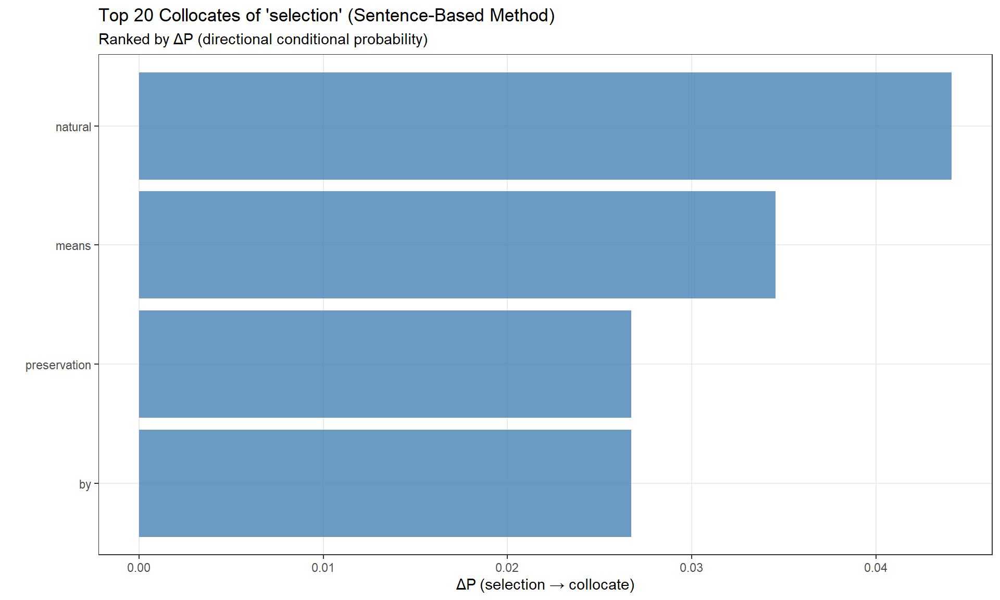

Analyzing Collocations and N-grams in R

Introduction
This tutorial introduces collocation and co-occurrence analysis — methods for identifying words that frequently appear together and understanding the semantic relationships between words in text. Collocations are fundamental to understanding natural language patterns, idioms, and the contextual behavior of words (McEnery, Xiao, and Tono 2006; S. Th. Gries 2013).

Prerequisites
Before starting this tutorial, we recommend familiarity with:
Citation
Martin Schweinberger. 2026. Analyzing Collocations and N-grams in R. The Language Technology and Data Analysis Laboratory (LADAL), The University of Queensland, Australia. url: https://ladal.edu.au/tutorials/collocation_tutorial/collocation_tutorial.html (Version 2026.03.27), doi: .
The Central Question
Research Question
How can you determine if words occur together more frequently than would be expected by chance?
This tutorial shows how to answer this question using collocation analysis and association measures.
What Are Collocations?
Collocations are word combinations that appear together significantly more often than random chance would predict.
Examples:
- Merry Christmas — “merry” and “Christmas” co-occur far more than expected
- strong coffee — not “powerful coffee”
- make a decision — not “do a decision”
- take a risk — not “make a risk”
If you randomly shuffled all words in a corpus and tested co-occurrence frequencies, collocations like Merry Christmas would occur significantly less often in the shuffled corpus than in natural text. This statistical evidence of attraction is what defines a collocation.
Collocations vs. N-grams
We must differentiate between two related but distinct concepts:
| Concept | Definition | Example | Adjacency Required? |
|---|---|---|---|
| Collocation | Words significantly attracted to one another (may or may not be adjacent) | black and coffee (can be separated: “black, strong coffee”) | No |
| N-gram | Sequences of n adjacent words | Bigram: This is Trigram: This is a |
Yes |
Key Distinction
- N-grams are purely positional: they count adjacent word sequences regardless of whether the combination is meaningful
- Collocations are statistical: they identify word pairs (or groups) that are significantly attracted, even across intervening words
Merry Christmas is both a bigram (adjacent) and a collocation (statistically significant). Of the is a bigram but likely not a meaningful collocation (just high-frequency grammatical words).
Why Collocations Matter
Collocations are crucial for:
- Language learning: Native-like fluency requires knowing which words “go together”
- Translation: Many collocations don’t translate literally (make a decision ≠ hacer una decisión in Spanish)
- Lexicography: Dictionaries must document typical collocations for each word
- Corpus linguistics: Understanding semantic domains and discourse patterns
- NLP: Training language models, extracting multi-word expressions
- Stylometry: Author profiling, genre classification
Part I: Conceptual Foundations
Before analyzing collocations in R, we need to understand the statistical foundations.
The Contingency Table
Collocation analysis is based on co-occurrence frequencies in a 2×2 contingency table. For two words \(w_1\) and \(w_2\):
| \(w_2\) present | \(w_2\) absent | Row totals | |
|---|---|---|---|
| \(w_1\) present | \(O_{11}\) | \(O_{12}\) | \(R_1\) |
| \(w_1\) absent | \(O_{21}\) | \(O_{22}\) | \(R_2\) |
| Column totals | \(C_1\) | \(C_2\) | \(N\) |
Where:
- \(O_{11}\) = Observed frequency of \(w_1\) and \(w_2\) together
- \(O_{12}\) = Observed frequency of \(w_1\) without \(w_2\)
- \(O_{21}\) = Observed frequency of \(w_2\) without \(w_1\)
- \(O_{22}\) = Observed frequency of neither \(w_1\) nor \(w_2\)
- \(N\) = Total observations (all words/contexts in the corpus)
Expected Frequencies
If words were randomly distributed (no attraction/repulsion), we calculate expected frequencies:
| \(w_2\) present | \(w_2\) absent | Row totals | |
|---|---|---|---|
| \(w_1\) present | \(E_{11} = \frac{R_1 \times C_1}{N}\) | \(E_{12} = \frac{R_1 \times C_2}{N}\) | \(R_1\) |
| \(w_1\) absent | \(E_{21} = \frac{R_2 \times C_1}{N}\) | \(E_{22} = \frac{R_2 \times C_2}{N}\) | \(R_2\) |
| Column totals | \(C_1\) | \(C_2\) | \(N\) |
Association measures compare observed (\(O\)) vs. expected (\(E\)) frequencies to quantify attraction/repulsion.
Association Measures
Association measures quantify the strength of the relationship between words. Here are the most important ones:
Gries’ \(\Delta P_{AM}\) (Recommended)
Gries’ AM (S. T. Gries 2022) is currently the best association measure. It has three critical advantages:
- Asymmetry-aware: The association from \(w_1 \to w_2\) may differ from \(w_2 \to w_1\)
- Frequency-independent: Unlike χ², MI, and t-score, it’s not inflated by high word frequencies
- Normalized: Accounts for different possible value ranges across word pairs
When to Use Gries’ AM
Use Gries’ AM when:
- You need asymmetric association (directionality matters)
- Word frequencies vary widely in your corpus
- You want a measure robust to corpus size
Delta P (\(\Delta P\))
Delta P (Ellis 2007; S. T. Gries 2013) is based on conditional probabilities:
\[\Delta P_1 = P(w_1 | w_2) - P(w_1 | \neg w_2) = \frac{O_{11}}{C_1} - \frac{O_{12}}{C_2}\]
\[\Delta P_2 = P(w_2 | w_1) - P(w_2 | \neg w_1) = \frac{O_{11}}{R_1} - \frac{O_{21}}{R_2}\]
Interpretation:
- \(\Delta P_1\): How much does seeing \(w_2\) increase the probability of \(w_1\)?
- \(\Delta P_2\): How much does seeing \(w_1\) increase the probability of \(w_2\)?
- Range: [−1, 1]
- Values near 0: no association
- Positive: attraction; Negative: repulsion
Asymmetry in \(\Delta P\)
\(\Delta P\) recognizes that association is directional:
- “strong” is highly attracted to “coffee” (high \(\Delta P_{\text{strong} \to \text{coffee}}\))
- “coffee” is less exclusively attracted to “strong” (lower \(\Delta P_{\text{coffee} \to \text{strong}}\))
This mirrors how speakers think: strong coffee is a fixed phrase, but coffee can be modified by many adjectives.
Pointwise Mutual Information (PMI)
PMI measures how much more (or less) likely two words are to co-occur compared to independence:
\[\text{PMI}(w_1, w_2) = \log_2 \left( \frac{P(w_1, w_2)}{P(w_1) \cdot P(w_2)} \right) = \log_2 \left( \frac{O_{11}/N}{(R_1/N) \cdot (C_1/N)} \right)\]
Interpretation:
- PMI = 0: Words occur together as often as expected by chance
- PMI > 0: Words attract (positive association)
- PMI < 0: Words repel (negative association)
- Range: (−∞, +∞)
Problems with PMI
- Rare word bias: PMI is inflated for rare word pairs
- Negative values hard to interpret: What does PMI = −3 mean practically?
- Not normalized: Cannot directly compare PMI values across corpora of different sizes
Solution: Use PPMI (Positive PMI) — set all negative values to 0
Log-Likelihood Ratio (G²)
Log-Likelihood Ratio compares observed vs. expected frequencies using likelihood:
\[G^2 = 2 \sum_{i=1}^{4} O_i \log \left( \frac{O_i}{E_i} \right)\]
\[G^2 = 2 \left( O_{11} \log\frac{O_{11}}{E_{11}} + O_{12} \log\frac{O_{12}}{E_{12}} + O_{21} \log\frac{O_{21}}{E_{21}} + O_{22} \log\frac{O_{22}}{E_{22}} \right)\]
Interpretation:
- G² ≈ χ² but more accurate for small expected frequencies
- Higher values = stronger association
- Can be tested for significance using χ² distribution with df = 1
Chi-Square (χ²)
\[\chi^2 = \sum_{i=1}^{4} \frac{(O_i - E_i)^2}{E_i} = \frac{(O_{11} - E_{11})^2}{E_{11}} + \frac{(O_{12} - E_{12})^2}{E_{12}} + \frac{(O_{21} - E_{21})^2}{E_{21}} + \frac{(O_{22} - E_{22})^2}{E_{22}}\]
Interpretation:
- χ² = 0: Observed = Expected (no association)
- Higher values = stronger association
- p-value: Test against χ² distribution with df = 1
Problems with χ²
- Frequency-dependent: Inflated by high word frequencies
- Unreliable for small expected frequencies (E < 5): violates assumptions
- Symmetric: Cannot distinguish \(w_1 \to w_2\) from \(w_2 \to w_1\)
Better alternative: Use G² instead
t-Score
\[\text{t-score} = \frac{O_{11} - E_{11}}{\sqrt{O_{11}}}\]
Interpretation:
- Measures deviation from expected co-occurrence, normalized by standard deviation
- Higher absolute values = stronger association
- Range: (−∞, +∞)
t-Score vs. Other Measures
- t-score favors high-frequency collocations (good for finding common phrases)
- PMI favors low-frequency collocations (good for finding rare but strong associations)
Choose based on your research goal:
- Finding fixed phrases used by everyone? → t-score
- Finding specialized terminology? → PMI
Dice Coefficient
\[\text{Dice}(w_1, w_2) = \frac{2 \times O_{11}}{\text{freq}(w_1) + \text{freq}(w_2)} = \frac{2 \times O_{11}}{R_1 + C_1}\]
Interpretation:
- Range: [0, 1]
- Dice = 1: Perfect overlap (words always co-occur)
- Dice = 0: No overlap (words never co-occur)
Minimum Sensitivity (MS)
MS (Pedersen 1998) is the minimum of the two conditional probabilities:
\[\text{MS} = \min \left( P(w_1 | w_2), P(w_2 | w_1) \right) = \min \left( \frac{O_{11}}{C_1}, \frac{O_{11}}{R_1} \right)\]
Interpretation:
- MS = 1: Perfect bidirectional dependence (words always co-occur)
- MS = 0: No dependence
- Range: [0, 1]
Phi Coefficient
Phi is an effect size measure based on χ²:
\[\phi = \sqrt{\frac{\chi^2}{N}}\]
Interpretation:
- Range: [0, 1] for positive associations
- Higher values = stronger effect
- Similar to Pearson’s r for 2×2 tables
Comparing Association Measures
| Measure | Range | Frequency-dependent? | Directional? | Best for |
|---|---|---|---|---|
| Gries’ AM | [0, 1] | No ✓ | Yes ✓ | General use (robust, asymmetric) |
| \(\Delta P\) | [−1, 1] | No ✓ | Yes ✓ | Conditional probabilities |
| PMI | (−∞, +∞) | Yes ✗ | No ✗ | Rare but strong associations |
| G² | [0, +∞) | Yes ✗ | No ✗ | Significance testing |
| χ² | [0, +∞) | Yes ✗ | No ✗ | Large expected frequencies only |
| t-score | (−∞, +∞) | Yes ✗ | No ✗ | Common phrases |
| Dice | [0, 1] | No ✓ | No ✗ | Fixed expressions |
| MS | [0, 1] | No ✓ | Yes ✓ | Mutual dependence |
| Phi | [0, 1] | No ✓ | No ✗ | Effect size |
Recommendation
For most corpus linguistic research: Use Gries’ AM or \(\Delta P\) (if asymmetry matters) or G² (if you need p-values).
Avoid: χ² (use G² instead), raw PMI (use PPMI), t-score (unless specifically seeking high-frequency collocations).
Exercises: Association Measures
Q1. Which association measure is MOST appropriate for identifying rare but strongly associated word pairs (e.g., technical jargon)?
Q2. A researcher finds that \(\Delta P_{\text{strong} \to \text{coffee}} = 0.45\) but \(\Delta P_{\text{coffee} \to \text{strong}} = 0.12\). What does this asymmetry mean?
Q3. Why should you avoid using raw χ² for collocation analysis?
Q4. A word pair has Dice = 0.95. What does this mean?
Part II: Collocation Analysis in R
Now that we understand the theory, let’s extract and analyze collocations using R. We’ll use two proper methods that identify true collocations (non-adjacent word pairs).
Important: Why We Don’t Use
quanteda::textstat_collocations()
Although quanteda has a function called textstat_collocations(), it does NOT detect true collocations. Instead, it:
- Extracts only adjacent n-grams (bigrams, trigrams, etc.)
- Applies statistical tests to these n-grams
This is misleading because true collocations don’t require adjacency. For example, strong and coffee are collocates even in “strong, black coffee” where they’re separated.
We use quanteda::fcm() to create feature co-occurrence matrices (which DO capture non-adjacent co-occurrence), but we avoid textstat_collocations().
Preparation and Data Loading
Install Packages
Code
install.packages(c("tidyverse", "flextable", "tokenizers", "quanteda",
"tidytext", "FactoMineR", "factoextra", "GGally",
"ggdendro", "igraph", "Matrix", "cowplot", "checkdown")) Load Packages
Code
library(tidyverse) # data manipulation
library(flextable) # tables
library(tokenizers) # text tokenization
library(quanteda) # ONLY for fcm(), tokens(), and dfm()
library(tidytext) # text mining
library(FactoMineR) # correspondence analysis
library(factoextra) # CA visualization
library(GGally) # network plots
library(ggdendro) # dendrograms
library(igraph) # network analysis
library(Matrix) # sparse matrices
library(cowplot) # plot arrangements
library(checkdown) # interactive exercises
options(stringsAsFactors = FALSE)
options(scipen = 999)
options(max.print = 1000) Load Example Data
We’ll use Charles Darwin’s On the Origin of Species:
Code
# load Darwin's Origin of Species
text <- base::readRDS("data/cdo.rda") |>
paste0(collapse = " ") |>
stringr::str_squish() |>
stringr::str_remove_all("- ") substr(text, start = 1, stop = 200) |
|---|
When we look to the individuals of the same variety or sub-variety of our older cultivated plants and animals, one of the first points which strikes us, is, that they generally differ much more from e |
Method 1: Sentence-Based Collocation Detection
This method identifies word pairs that co-occur within the same sentence (regardless of adjacency), then calculates association measures.
Why Sentences as Context Units?
Using sentences as co-occurrence windows has advantages:
- Captures grammatical and semantic relationships within syntactic boundaries
- More restrictive than arbitrary word windows (reduces noise)
- Linguistically motivated (sentences are meaning units)
Alternative: You could use paragraphs, fixed-size windows (e.g., 10 words), or entire documents depending on your research question.
Step 1: Prepare Sentences
Code
# split text into sentences and clean
sentences <- text |>
# concatenate if text is a vector
paste0(collapse = " ") |>
# separate possessives (so "Darwin's" becomes "Darwin 's")
stringr::str_replace_all(fixed("'"), " '") |>
stringr::str_replace_all(fixed("'"), " '") |>
# tokenize into sentences
tokenizers::tokenize_sentences() |>
# unlist to vector
unlist() |>
# remove non-word characters (punctuation, numbers, etc.)
stringr::str_replace_all("\\W", " ") |>
stringr::str_replace_all("[^[:alnum:] ]", " ") |>
# remove extra spaces
stringr::str_squish() |>
# convert to lowercase
tolower() head(sentences, 10) |
|---|
when we look to the individuals of the same variety or sub variety of our older cultivated plants and animals one of the first points which strikes us is that they generally differ much more from each other than do the individuals of any one species or variety in a state of nature |
the variation under nature is clearly seen |
natural selection acts exclusively by the preservation and accumulation of variations which are beneficial |
the existence of individual variability and of some few well marked varieties though necessary as the foundation for the work helps us but little in understanding how species arise in nature |
on the origin of species by means of natural selection or the preservation of favoured races in the struggle for life we may conclude that natural selection has been the main but not exclusive means of modification |
Step 2: Create Co-occurrence Matrix
Code
# tokenize sentences using quanteda
# (we use quanteda ONLY for its fcm() function to create co-occurrence matrices)
tokens_sent <- quanteda::tokens(sentences)
# create document-feature matrix (words × sentences)
dfmat <- quanteda::dfm(tokens_sent)
# create feature co-occurrence matrix (FCM)
# context = "document" means: count co-occurrence within each sentence
# tri = FALSE means: keep full matrix (not just upper triangle)
fcmat <- quanteda::fcm(tokens_sent, context = "document",
count = "frequency", tri = FALSE)
# convert to tidy format for easier manipulation
coll_basic <- fcmat |>
tidytext::tidy() |>
# rename columns for clarity
dplyr::rename(
w1 = term, # word 1
w2 = document, # word 2
O11 = count # observed co-occurrence frequency
) |>
# reorder columns
dplyr::select(w1, w2, O11) w1 | w2 | O11 |
|---|---|---|
when | we | 1 |
when | look | 1 |
when | to | 1 |
when | the | 4 |
when | individuals | 2 |
when | of | 5 |
when | same | 1 |
when | variety | 3 |
when | or | 2 |
when | sub | 1 |
What is O11?
O11 = Number of sentences where w1 and w2 both appear.
For example, if “natural” and “selection” appear together in 45 sentences, O11 = 45.
This counts co-occurrence regardless of word order or adjacency within the sentence.
Step 3: Calculate Contingency Table Values
To compute association measures, we need all four cells of the 2×2 contingency table plus marginal totals:
Code
# calculate row totals (R1, R2), column totals (C1, C2), and grand total (N)
colldf <- coll_basic |>
# calculate total observations (sum of all co-occurrences)
dplyr::mutate(N = sum(O11)) |>
# group by w1 to calculate R1 (total for word 1)
dplyr::group_by(w1) |>
dplyr::mutate(
R1 = sum(O11), # how often w1 appears (with any word)
O12 = R1 - O11, # w1 without w2
R2 = N - R1 # everything except w1
) |>
dplyr::ungroup() |>
# group by w2 to calculate C1 (total for word 2)
dplyr::group_by(w2) |>
dplyr::mutate(
C1 = sum(O11), # how often w2 appears (with any word)
O21 = C1 - O11, # w2 without w1
C2 = N - C1, # everything except w2
O22 = R2 - O21 # neither w1 nor w2
) |>
dplyr::ungroup() w1 | w2 | O11 | N | R1 | O12 | R2 | C1 | O21 | C2 | O22 |
|---|---|---|---|---|---|---|---|---|---|---|
when | we | 1 | 5,200 | 52 | 51 | 5,148 | 88 | 87 | 5,112 | 5,061 |
when | look | 1 | 5,200 | 52 | 51 | 5,148 | 52 | 51 | 5,148 | 5,097 |
when | to | 1 | 5,200 | 52 | 51 | 5,148 | 52 | 51 | 5,148 | 5,097 |
when | the | 4 | 5,200 | 52 | 48 | 5,148 | 446 | 442 | 4,754 | 4,706 |
when | individuals | 2 | 5,200 | 52 | 50 | 5,148 | 103 | 101 | 5,097 | 5,047 |
when | of | 5 | 5,200 | 52 | 47 | 5,148 | 460 | 455 | 4,740 | 4,693 |
when | same | 1 | 5,200 | 52 | 51 | 5,148 | 52 | 51 | 5,148 | 5,097 |
when | variety | 3 | 5,200 | 52 | 49 | 5,148 | 153 | 150 | 5,047 | 4,998 |
when | or | 2 | 5,200 | 52 | 50 | 5,148 | 139 | 137 | 5,061 | 5,011 |
when | sub | 1 | 5,200 | 52 | 51 | 5,148 | 52 | 51 | 5,148 | 5,097 |
Contingency Table Recap:
| w2 present | w2 absent | Row totals | |
|---|---|---|---|
| w1 present | O11 | O12 | R1 |
| w1 absent | O21 | O22 | R2 |
| Column totals | C1 | C2 | N |
Step 4: Focus on a Target Word
For demonstration, we’ll find collocates of “selection”:
Code
# filter for collocates of "selection"
colldf_redux <- colldf |>
dplyr::filter(
w1 == "selection",
# minimum frequency of w2 (reduces noise from rare words)
(O11 + O21) > 2,
# minimum co-occurrence frequency
O11 > 2
) |>
# calculate expected frequencies (under independence assumption)
dplyr::rowwise() |>
dplyr::mutate(
E11 = (R1 * C1) / N,
E12 = (R1 * C2) / N,
E21 = (R2 * C1) / N,
E22 = (R2 * C2) / N
) |>
dplyr::ungroup() w1 | w2 | O11 | N | R1 | O12 | R2 | C1 | O21 | C2 | O22 | E11 | E12 | E21 | E22 |
|---|---|---|---|---|---|---|---|---|---|---|---|---|---|---|
selection | the | 9 | 5,200 | 84 | 75 | 5,116 | 446 | 437 | 4,754 | 4,679 | 7.2046154 | 76.79538 | 438.79538 | 4,677.205 |
selection | of | 9 | 5,200 | 84 | 75 | 5,116 | 460 | 451 | 4,740 | 4,665 | 7.4307692 | 76.56923 | 452.56923 | 4,663.431 |
selection | natural | 5 | 5,200 | 84 | 79 | 5,116 | 84 | 79 | 5,116 | 5,037 | 1.3569231 | 82.64308 | 82.64308 | 5,033.357 |
selection | by | 3 | 5,200 | 84 | 81 | 5,116 | 49 | 46 | 5,151 | 5,070 | 0.7915385 | 83.20846 | 48.20846 | 5,067.792 |
selection | preservation | 3 | 5,200 | 84 | 81 | 5,116 | 49 | 46 | 5,151 | 5,070 | 0.7915385 | 83.20846 | 48.20846 | 5,067.792 |
selection | means | 4 | 5,200 | 84 | 80 | 5,116 | 71 | 67 | 5,129 | 5,049 | 1.1469231 | 82.85308 | 69.85308 | 5,046.147 |
Step 5: Calculate Association Measures
Now we calculate all the association measures discussed in Part I. The code below implements the formulas from the theoretical section:
Code
assoc_tb <- colldf_redux |>
# count number of rows (for Bonferroni correction)
dplyr::mutate(Rws = n()) |>
dplyr::rowwise() |>
# Fisher's Exact Test (p-value for significance)
# Tests null hypothesis: w1 and w2 are independent
dplyr::mutate(
p = as.vector(unlist(
fisher.test(matrix(c(O11, O12, O21, O22), ncol = 2, byrow = TRUE))[1]
))
) |>
# Gries' AM (Association Measure)
# Step 1: Calculate "bias towards top-left" (maximum possible co-occurrence)
# This represents the upper bound if w1 and w2 always co-occurred
dplyr::mutate(
btl_O12 = ifelse(C1 > R1, 0, R1 - C1),
btl_O11 = ifelse(C1 > R1, R1, R1 - btl_O12),
btl_O21 = ifelse(C1 > R1, C1 - R1, C1 - btl_O11),
btl_O22 = ifelse(C1 > R1, C2, C2 - btl_O12),
# Step 2: Calculate "bias towards top-right" (minimum co-occurrence)
# This represents the lower bound if w1 and w2 never co-occurred
btr_O11 = 0,
btr_O21 = R1,
btr_O12 = C1,
btr_O22 = C2 - R1,
# Step 3: Calculate observed proportion relative to bounds
upp = btl_O11 / R1, # upper bound proportion
low = btr_O11 / R1, # lower bound proportion (= 0)
op = O11 / R1, # observed proportion
# AM = observed relative to maximum possible
# Ranges from 0 (no association) to 1 (perfect association)
AM = op / upp
) |>
# Remove temporary columns used for AM calculation
dplyr::select(-starts_with("btr_"), -starts_with("btl_"),
-upp, -low, -op) |>
# Chi-Square (χ²)
# Sum of squared deviations (observed - expected) / expected
dplyr::mutate(
X2 = (O11 - E11)^2 / E11 + (O12 - E12)^2 / E12 +
(O21 - E21)^2 / E21 + (O22 - E22)^2 / E22
) |>
# All other association measures
dplyr::mutate(
# Phi coefficient (effect size based on χ²)
# Normalized χ² value, ranges 0-1 for positive associations
phi = sqrt(X2 / N),
# Dice coefficient
# Measures overlap: how much of w1+w2's total frequency is co-occurrence?
Dice = (2 * O11) / (R1 + C1),
LogDice = log((2 * O11) / (R1 + C1)),
# Mutual Information
# Log ratio of observed to expected co-occurrence
MI = log2(O11 / E11),
# Minimum Sensitivity
# Minimum of the two conditional probabilities
MS = min(O11 / C1, O11 / R1),
# t-score
# Deviation from expected, normalized by sqrt(observed)
# Favors high-frequency collocations
t.score = (O11 - E11) / sqrt(O11),
# z-score
# Deviation from expected, normalized by sqrt(expected)
z.score = (O11 - E11) / sqrt(E11),
# Pointwise Mutual Information
# Log of ratio: P(w1,w2) / (P(w1) * P(w2))
PMI = log2((O11 / N) / ((C1 / N) * (R1 / N))),
# Delta P (two directions)
# DeltaP12: How much does w2 increase probability of w1?
# DeltaP21: How much does w1 increase probability of w2?
DeltaP12 = (O11 / (O11 + O12)) - (O21 / (O21 + O22)),
DeltaP21 = (O11 / (O11 + O21)) - (O12 / (O12 + O22)),
# Simple DP
DP = (O11 / R1) - (O21 / R2),
# Log Odds Ratio
# Log of (O11*O22) / (O12*O21), with +0.5 smoothing to avoid zeros
LogOddsRatio = log(((O11 + 0.5) * (O22 + 0.5)) /
((O12 + 0.5) * (O21 + 0.5))),
# Log-Likelihood (G²)
# More robust than χ² for small expected frequencies
G2 = 2 * (O11 * log(O11 / E11) + O12 * log(O12 / E12) +
O21 * log(O21 / E21) + O22 * log(O22 / E22))
) |>
# Bonferroni-corrected significance levels
# Adjusts for multiple comparisons: threshold = α / number of tests
dplyr::mutate(
Sig_corrected = dplyr::case_when(
p / Rws > .05 ~ "n.s.",
p / Rws > .01 ~ "p < .05*",
p / Rws > .001 ~ "p < .01**",
p / Rws <= .001 ~ "p < .001***",
TRUE ~ "N.A."
),
p = round(p, 5)
) |>
# Filter: keep only significant, attractive collocations
dplyr::filter(
Sig_corrected != "n.s.", # must be significant after Bonferroni
E11 < O11 # observed > expected (attraction, not repulsion)
) |>
# Sort by DeltaP12 (or choose another measure for ranking)
dplyr::arrange(desc(DeltaP12)) |>
# Remove temporary/redundant columns for cleaner output
dplyr::select(-O12, -O21, -O22, -R1, -R2, -C1, -C2,
-E11, -E12, -E21, -E22, -Rws) |>
dplyr::ungroup() w1 | w2 | O11 | N | p | AM | X2 | phi | Dice | LogDice | MI | MS | t.score | z.score | PMI | DeltaP12 | DeltaP21 | DP | LogOddsRatio | G2 | Sig_corrected |
|---|---|---|---|---|---|---|---|---|---|---|---|---|---|---|---|---|---|---|---|---|
selection | natural | 5 | 5,200 | 0.01111 | 0.05952381 | 10.104785 | 0.04408206 | 0.05952381 | -2.821379 | 1.881589 | 0.05952381 | 1.629234 | 3.127453 | 1.881589 | 0.04408206 | 0.04408206 | 0.04408206 | 1.477899 | 6.084680 | p < .01** |
selection | means | 4 | 5,200 | 0.02715 | 0.05633803 | 7.313683 | 0.03750303 | 0.05161290 | -2.963984 | 1.802231 | 0.04761905 | 1.426538 | 2.664074 | 1.802231 | 0.03452288 | 0.04074045 | 0.03452288 | 1.430737 | 4.506697 | p < .01** |
selection | by | 3 | 5,200 | 0.04400 | 0.06122449 | 6.322550 | 0.03486940 | 0.04511278 | -3.098590 | 1.922231 | 0.03571429 | 1.275056 | 2.482297 | 1.922231 | 0.02672289 | 0.04549939 | 0.02672289 | 1.543902 | 3.740267 | p < .01** |
selection | preservation | 3 | 5,200 | 0.04400 | 0.06122449 | 6.322550 | 0.03486940 | 0.04511278 | -3.098590 | 1.922231 | 0.03571429 | 1.275056 | 2.482297 | 1.922231 | 0.02672289 | 0.04549939 | 0.02672289 | 1.543902 | 3.740267 | p < .01** |
Interpreting the Results
Each row shows a word that significantly collocates with “selection”. Key columns:
- w2: The collocate word
- O11: Number of sentences containing both “selection” and this word
- N: Total observations (all word pairs)
- AM: Gries’ association measure (0–1, higher = stronger)
- DeltaP12: Conditional probability measure (directional)
- phi: Effect size based on χ²
- Dice: Overlap coefficient
- PMI: Pointwise Mutual Information
- G2: Log-likelihood ratio
- p: Fisher’s exact test p-value
- Sig_corrected: Significance after Bonferroni correction
Compare different measures to see which words rank highest by each criterion!
Step 6: Visualize Top Collocates
Code
# Visualize top 20 collocates by ΔP
assoc_tb |>
top_n(20, DeltaP12) |>
mutate(w2 = reorder(w2, DeltaP12)) |>
ggplot(aes(x = DeltaP12, y = w2)) +
geom_col(fill = "steelblue", alpha = 0.8) +
theme_bw() +
labs(
title = "Top 20 Collocates of 'selection' (Sentence-Based Method)",
subtitle = "Ranked by ΔP (directional conditional probability)",
x = "ΔP (selection → collocate)",
y = ""
) +
theme(panel.grid.minor = element_blank()) 
Method 2: KWIC-Based Collocation Detection
This method uses KeyWord In Context (KWIC) to find words that appear near a target word within a fixed window (e.g., ±5 words).
KWIC vs. Sentence-Based
- Sentence-based: Broader context (entire sentence), captures long-range dependencies
- KWIC: Narrower context (fixed window), captures immediate collocates
KWIC is better for finding grammatical collocates (adjectives, verbs directly modifying/complementing the target). Sentence-based is better for semantic collocates (thematic associates that may be distant).
Step 1: Prepare Corpus
We’ll split the text into chapters (to mimic a corpus with multiple documents):
Code
# Clean and split corpus into chapters
texts <- text |>
paste0(collapse = " ") |>
# Separate possessives
stringr::str_replace_all(fixed("'"), " '") |>
stringr::str_replace_all(fixed("'"), " '") |>
# Split by chapter markers (if present; otherwise creates single chunk)
stringr::str_split("CHAPTER [IVX]{1,4}") |>
unlist() |>
# Remove non-word characters
stringr::str_replace_all("\\W", " ") |>
stringr::str_replace_all("[^[:alpha:] ]", " ") |>
# Clean spaces
stringr::str_squish() |>
# Lowercase
tolower() head(substr(texts, 1, 100), 3) |
|---|
when we look to the individuals of the same variety or sub variety of our older cultivated plants an |
Why Split Into Chunks?
Splitting the corpus into chapters (or other units) mirrors real-world corpora, which typically consist of multiple texts/documents. This allows tokens_select() to extract KWIC contexts across different document boundaries.
Step 2: Extract KWIC Context
We use quanteda::tokens_select() to extract words within a window around our keyword:
Code
# Define keyword
keyword <- "selection"
# Extract words within ±5 word window of "selection"
# tokens_select() finds all instances of the pattern and extracts surrounding context
kwic_words <- quanteda::tokens_select(
quanteda::tokens(texts),
pattern = keyword,
window = 5, # 5 words before and 5 words after
selection = "keep", # keep the keyword itself in results
case_insensitive = TRUE
) |>
unlist() |>
# Tabulate frequencies of words in KWIC contexts
table() |>
as.data.frame() |>
# Rename columns
dplyr::rename(token = 1, n = 2) |>
# Mark as 'kwic' type
dplyr::mutate(type = "kwic") token | n | type |
|---|---|---|
natural | 3 | kwic |
selection | 3 | kwic |
the | 3 | kwic |
by | 2 | kwic |
of | 2 | kwic |
preservation | 2 | kwic |
acts | 1 | kwic |
been | 1 | kwic |
but | 1 | kwic |
clearly | 1 | kwic |
conclude | 1 | kwic |
exclusively | 1 | kwic |
favoured | 1 | kwic |
has | 1 | kwic |
is | 1 | kwic |
Understanding the KWIC Table
Each row shows:
- token: A word that appears within ±5 words of “selection”
- n: How many times it appears in those contexts
- type: “kwic” (from KWIC contexts)
High-frequency words here are collocate candidates — they appear near “selection” frequently.
Step 3: Create Corpus Frequency List
We need overall corpus frequencies for comparison (to calculate expected frequencies):
Code
# Create frequency table for entire corpus
corpus_words <- texts |>
quanteda::tokens() |>
unlist() |>
as.data.frame() |>
dplyr::rename(token = 1) |>
dplyr::group_by(token) |>
dplyr::summarise(n = n(), .groups = "drop") |>
dplyr::mutate(type = "corpus") token | n | type |
|---|---|---|
the | 13 | corpus |
of | 12 | corpus |
in | 4 | corpus |
and | 3 | corpus |
natural | 3 | corpus |
nature | 3 | corpus |
or | 3 | corpus |
selection | 3 | corpus |
species | 3 | corpus |
variety | 3 | corpus |
but | 2 | corpus |
by | 2 | corpus |
for | 2 | corpus |
individuals | 2 | corpus |
is | 2 | corpus |
Step 4: Combine and Calculate Contingency Table
Code
# Join KWIC and corpus frequencies
freq_df <- dplyr::left_join(corpus_words, kwic_words, by = "token") |>
dplyr::rename(corpus = n.x, kwic = n.y) |>
dplyr::select(-type.x, -type.y) |>
# Replace NA with 0 (words not in KWIC contexts)
tidyr::replace_na(list(corpus = 0, kwic = 0)) |>
# Filter out words that don't appear in corpus
dplyr::filter(corpus > 0) |>
# Adjust corpus count: subtract KWIC instances to avoid double-counting
# (corpus should represent "outside KWIC" contexts)
dplyr::mutate(corpus = corpus - kwic)
# Calculate contingency table values
stats_tb <- freq_df |>
dplyr::mutate(
corpus = as.numeric(corpus),
kwic = as.numeric(kwic),
# Column totals
C1 = sum(kwic), # total words in all KWIC contexts
C2 = sum(corpus), # total words outside KWIC contexts
N = C1 + C2 # grand total
) |>
dplyr::rowwise() |>
dplyr::mutate(
# Row totals and observed frequencies
R1 = corpus + kwic, # total frequency of this word
R2 = N - R1, # all other words
O11 = kwic, # word appears in KWIC
O12 = R1 - O11, # word appears outside KWIC
O21 = C1 - O11, # other words in KWIC
O22 = C2 - O12, # other words outside KWIC
# Expected frequencies
E11 = (R1 * C1) / N,
E12 = (R1 * C2) / N,
E21 = (R2 * C1) / N,
E22 = (R2 * C2) / N
) |>
dplyr::select(-corpus, -kwic) |>
dplyr::ungroup() token | C1 | C2 | N | R1 | R2 | O11 | O12 | O21 | O22 | E11 | E12 | E21 | E22 |
|---|---|---|---|---|---|---|---|---|---|---|---|---|---|
a | 33 | 109 | 142 | 1 | 141 | 0 | 1 | 33 | 108 | 0.2323944 | 0.7676056 | 32.76761 | 108.2324 |
accumulation | 33 | 109 | 142 | 1 | 141 | 0 | 1 | 33 | 108 | 0.2323944 | 0.7676056 | 32.76761 | 108.2324 |
acts | 33 | 109 | 142 | 1 | 141 | 1 | 0 | 32 | 109 | 0.2323944 | 0.7676056 | 32.76761 | 108.2324 |
and | 33 | 109 | 142 | 3 | 139 | 0 | 3 | 33 | 106 | 0.6971831 | 2.3028169 | 32.30282 | 106.6972 |
animals | 33 | 109 | 142 | 1 | 141 | 0 | 1 | 33 | 108 | 0.2323944 | 0.7676056 | 32.76761 | 108.2324 |
any | 33 | 109 | 142 | 1 | 141 | 0 | 1 | 33 | 108 | 0.2323944 | 0.7676056 | 32.76761 | 108.2324 |
are | 33 | 109 | 142 | 1 | 141 | 0 | 1 | 33 | 108 | 0.2323944 | 0.7676056 | 32.76761 | 108.2324 |
arise | 33 | 109 | 142 | 1 | 141 | 0 | 1 | 33 | 108 | 0.2323944 | 0.7676056 | 32.76761 | 108.2324 |
as | 33 | 109 | 142 | 1 | 141 | 0 | 1 | 33 | 108 | 0.2323944 | 0.7676056 | 32.76761 | 108.2324 |
been | 33 | 109 | 142 | 1 | 141 | 1 | 0 | 32 | 109 | 0.2323944 | 0.7676056 | 32.76761 | 108.2324 |
Contingency Table for KWIC:
| KWIC context | Outside KWIC | Row totals | |
|---|---|---|---|
| Token | O11 | O12 | R1 |
| Other tokens | O21 | O22 | R2 |
| Column totals | C1 | C2 | N |
Step 5: Calculate Association Measures (KWIC)
We apply the same association measure formulas, but now comparing KWIC vs. non-KWIC contexts:
Code
assoc_tb2 <- stats_tb |>
dplyr::mutate(Rws = n()) |>
dplyr::rowwise() |>
# Fisher's exact test
dplyr::mutate(
p = as.vector(unlist(
fisher.test(matrix(c(O11, O12, O21, O22), ncol = 2, byrow = TRUE))[1]
))
) |>
# Gries' AM
dplyr::mutate(
btl_O12 = ifelse(C1 > R1, 0, R1 - C1),
btl_O11 = ifelse(C1 > R1, R1, R1 - btl_O12),
btl_O21 = ifelse(C1 > R1, C1 - R1, C1 - btl_O11),
btl_O22 = ifelse(C1 > R1, C2, C2 - btl_O12),
btr_O11 = 0,
btr_O21 = R1,
btr_O12 = C1,
btr_O22 = C2 - R1,
upp = btl_O11 / R1,
low = btr_O11 / R1,
op = O11 / R1,
AM = op / upp
) |>
dplyr::select(-starts_with("btr_"), -starts_with("btl_"),
-upp, -low, -op) |>
# χ²
dplyr::mutate(
X2 = (O11 - E11)^2 / E11 + (O12 - E12)^2 / E12 +
(O21 - E21)^2 / E21 + (O22 - E22)^2 / E22
) |>
# Association measures
dplyr::mutate(
phi = sqrt(X2 / N),
MS = min(O11 / C1, O11 / R1),
Dice = (2 * O11) / (R1 + C1),
LogDice = log((2 * O11) / (R1 + C1)),
MI = log2(O11 / E11),
t.score = (O11 - E11) / sqrt(O11),
z.score = (O11 - E11) / sqrt(E11),
PMI = log2((O11 / N) / ((O11 + O12) / N * (O11 + O21) / N)),
DeltaP12 = (O11 / (O11 + O12)) - (O21 / (O21 + O22)),
DeltaP21 = (O11 / (O11 + O21)) - (O12 / (O12 + O22)),
DP = (O11 / R1) - (O21 / R2),
LogOddsRatio = log(((O11 + 0.5) * (O22 + 0.5)) /
((O12 + 0.5) * (O21 + 0.5))),
G2 = 2 * (O11 * log(O11 / E11) + O12 * log(O12 / E12) +
O21 * log(O21 / E21) + O22 * log(O22 / E22))
) |>
# Significance
dplyr::mutate(
Sig_corrected = dplyr::case_when(
p / Rws > .05 ~ "n.s.",
p / Rws > .01 ~ "p < .05*",
p / Rws > .001 ~ "p < .01**",
p / Rws <= .001 ~ "p < .001***",
TRUE ~ "N.A."
),
p = round(p, 5)
) |>
# Filter
dplyr::filter(
Sig_corrected != "n.s.",
E11 < O11
) |>
dplyr::arrange(desc(DeltaP12)) |>
dplyr::select(-O12, -O21, -O22, -R1, -R2, -C1, -C2,
-E11, -E12, -E21, -E22, -Rws) |>
dplyr::ungroup() token | N | O11 | p | AM | X2 | phi | MS | Dice | LogDice | MI | t.score | z.score | PMI | DeltaP12 | DeltaP21 | DP | LogOddsRatio | G2 | Sig_corrected |
|---|---|---|---|---|---|---|---|---|---|---|---|---|---|---|---|---|---|---|---|
natural | 142 | 3 | 0.01168 | 1.0000000 | 10.1229562 | 0.26699892 | 0.09090909 | 0.16666667 | -1.791759 | 2.1053530 | 1.3295320 | 2.7579474 | 2.1053530 | 0.7841727 | 0.09090909 | 0.7841727 | 3.2241080 | p < .001*** | |
selection | 142 | 3 | 0.01168 | 1.0000000 | 10.1229562 | 0.26699892 | 0.09090909 | 0.16666667 | -1.791759 | 2.1053530 | 1.3295320 | 2.7579474 | 2.1053530 | 0.7841727 | 0.09090909 | 0.7841727 | 3.2241080 | p < .001*** | |
by | 142 | 2 | 0.05274 | 1.0000000 | 6.7004329 | 0.21722373 | 0.06060606 | 0.11428571 | -2.169054 | 2.1053530 | 1.0855583 | 2.2518546 | 2.1053530 | 0.7785714 | 0.06060606 | 0.7785714 | 2.8553749 | p < .001*** | |
preservation | 142 | 2 | 0.05274 | 1.0000000 | 6.7004329 | 0.21722373 | 0.06060606 | 0.11428571 | -2.169054 | 2.1053530 | 1.0855583 | 2.2518546 | 2.1053530 | 0.7785714 | 0.06060606 | 0.7785714 | 2.8553749 | p < .001*** | |
acts | 142 | 1 | 0.23239 | 1.0000000 | 3.3264560 | 0.15305472 | 0.03030303 | 0.05882353 | -2.833213 | 2.1053530 | 0.7676056 | 1.5923017 | 2.1053530 | 0.7730496 | 0.03030303 | 0.7730496 | 2.3132967 | p < .01** | |
been | 142 | 1 | 0.23239 | 1.0000000 | 3.3264560 | 0.15305472 | 0.03030303 | 0.05882353 | -2.833213 | 2.1053530 | 0.7676056 | 1.5923017 | 2.1053530 | 0.7730496 | 0.03030303 | 0.7730496 | 2.3132967 | p < .01** | |
clearly | 142 | 1 | 0.23239 | 1.0000000 | 3.3264560 | 0.15305472 | 0.03030303 | 0.05882353 | -2.833213 | 2.1053530 | 0.7676056 | 1.5923017 | 2.1053530 | 0.7730496 | 0.03030303 | 0.7730496 | 2.3132967 | p < .01** | |
conclude | 142 | 1 | 0.23239 | 1.0000000 | 3.3264560 | 0.15305472 | 0.03030303 | 0.05882353 | -2.833213 | 2.1053530 | 0.7676056 | 1.5923017 | 2.1053530 | 0.7730496 | 0.03030303 | 0.7730496 | 2.3132967 | p < .01** | |
exclusively | 142 | 1 | 0.23239 | 1.0000000 | 3.3264560 | 0.15305472 | 0.03030303 | 0.05882353 | -2.833213 | 2.1053530 | 0.7676056 | 1.5923017 | 2.1053530 | 0.7730496 | 0.03030303 | 0.7730496 | 2.3132967 | p < .01** | |
favoured | 142 | 1 | 0.23239 | 1.0000000 | 3.3264560 | 0.15305472 | 0.03030303 | 0.05882353 | -2.833213 | 2.1053530 | 0.7676056 | 1.5923017 | 2.1053530 | 0.7730496 | 0.03030303 | 0.7730496 | 2.3132967 | p < .01** | |
has | 142 | 1 | 0.23239 | 1.0000000 | 3.3264560 | 0.15305472 | 0.03030303 | 0.05882353 | -2.833213 | 2.1053530 | 0.7676056 | 1.5923017 | 2.1053530 | 0.7730496 | 0.03030303 | 0.7730496 | 2.3132967 | p < .01** | |
main | 142 | 1 | 0.23239 | 1.0000000 | 3.3264560 | 0.15305472 | 0.03030303 | 0.05882353 | -2.833213 | 2.1053530 | 0.7676056 | 1.5923017 | 2.1053530 | 0.7730496 | 0.03030303 | 0.7730496 | 2.3132967 | p < .01** | |
may | 142 | 1 | 0.23239 | 1.0000000 | 3.3264560 | 0.15305472 | 0.03030303 | 0.05882353 | -2.833213 | 2.1053530 | 0.7676056 | 1.5923017 | 2.1053530 | 0.7730496 | 0.03030303 | 0.7730496 | 2.3132967 | p < .01** | |
seen | 142 | 1 | 0.23239 | 1.0000000 | 3.3264560 | 0.15305472 | 0.03030303 | 0.05882353 | -2.833213 | 2.1053530 | 0.7676056 | 1.5923017 | 2.1053530 | 0.7730496 | 0.03030303 | 0.7730496 | 2.3132967 | p < .01** | |
but | 142 | 1 | 0.41205 | 0.5000000 | 0.8143612 | 0.07572937 | 0.03030303 | 0.05714286 | -2.862201 | 1.1053530 | 0.5352113 | 0.7850502 | 1.1053530 | 0.2714286 | 0.02112872 | 0.2714286 | 1.2055101 | 0.6865228 | p < .01** |
is | 142 | 1 | 0.41205 | 0.5000000 | 0.8143612 | 0.07572937 | 0.03030303 | 0.05714286 | -2.862201 | 1.1053530 | 0.5352113 | 0.7850502 | 1.1053530 | 0.2714286 | 0.02112872 | 0.2714286 | 1.2055101 | 0.6865228 | p < .01** |
means | 142 | 1 | 0.41205 | 0.5000000 | 0.8143612 | 0.07572937 | 0.03030303 | 0.05714286 | -2.862201 | 1.1053530 | 0.5352113 | 0.7850502 | 1.1053530 | 0.2714286 | 0.02112872 | 0.2714286 | 1.2055101 | 0.6865228 | p < .01** |
that | 142 | 1 | 0.41205 | 0.5000000 | 0.8143612 | 0.07572937 | 0.03030303 | 0.05714286 | -2.862201 | 1.1053530 | 0.5352113 | 0.7850502 | 1.1053530 | 0.2714286 | 0.02112872 | 0.2714286 | 1.2055101 | 0.6865228 | p < .01** |
we | 142 | 1 | 0.41205 | 0.5000000 | 0.8143612 | 0.07572937 | 0.03030303 | 0.05714286 | -2.862201 | 1.1053530 | 0.5352113 | 0.7850502 | 1.1053530 | 0.2714286 | 0.02112872 | 0.2714286 | 1.2055101 | 0.6865228 | p < .01** |
nature | 142 | 1 | 0.55064 | 0.3333333 | 0.1750446 | 0.03510995 | 0.03030303 | 0.05555556 | -2.890372 | 0.5203905 | 0.3028169 | 0.3626659 | 0.5203905 | 0.1031175 | 0.01195441 | 0.1031175 | 0.6854251 | 0.1611769 | p < .01** |
Step 6: Visualize KWIC Collocates
Code
# Compare top collocates by different measures
p1 <- assoc_tb2 |>
top_n(15, DeltaP12) |>
mutate(token = reorder(token, DeltaP12)) |>
ggplot(aes(x = DeltaP12, y = token)) +
geom_col(fill = "steelblue", alpha = 0.8) +
theme_bw() +
labs(title = "Top 15 by ΔP", x = "ΔP", y = "") +
theme(panel.grid.minor = element_blank())
p2 <- assoc_tb2 |>
top_n(15, phi) |>
mutate(token = reorder(token, phi)) |>
ggplot(aes(x = phi, y = token)) +
geom_col(fill = "tomato", alpha = 0.8) +
theme_bw() +
labs(title = "Top 15 by Phi", x = "Phi coefficient", y = "") +
theme(panel.grid.minor = element_blank())
cowplot::plot_grid(p1, p2, nrow = 1) 
Exercises: Implementation
Q1. What is the key difference between the sentence-based method and the KWIC-based method?
Q2. Why do we calculate expected frequencies (E11, E12, E21, E22)?
Q3. In the code, we filter E11 < O11. Why?
Q4. Why do we apply Bonferroni correction to p-values?
N-grams
N-grams are sequences of n adjacent words. Unlike collocations, n-grams:
- Don’t require statistical significance
- Are purely positional (based on word order)
- Can include function words and non-meaningful sequences
N-grams are useful for:
- Identifying fixed phrases and idioms
- Language modeling (predicting next word)
- Extracting multi-word expressions
- Stylistic analysis
Extracting N-grams with tidytext
We’ll use tidytext::unnest_tokens() to extract bigrams and trigrams:
Code
# Convert text to data frame
text_df <- data.frame(text = text, stringsAsFactors = FALSE)
# Extract bigrams (2-grams)
bigrams <- text_df |>
tidytext::unnest_tokens(bigram, text, token = "ngrams", n = 2) |>
dplyr::count(bigram, sort = TRUE)
# Extract trigrams (3-grams)
trigrams <- text_df |>
tidytext::unnest_tokens(trigram, text, token = "ngrams", n = 3) |>
dplyr::count(trigram, sort = TRUE) bigram | n |
|---|---|
natural selection | 3 |
individuals of | 2 |
means of | 2 |
of the | 2 |
the individuals | 2 |
the preservation | 2 |
a state | 1 |
accumulation of | 1 |
acts exclusively | 1 |
and accumulation | 1 |
and animals | 1 |
and of | 1 |
animals one | 1 |
any one | 1 |
are beneficial | 1 |
Visualizing N-gram Frequencies
Code
# Combine bigrams and trigrams for comparison
ngram_comparison <- bind_rows(
bigrams |> top_n(15, n) |> mutate(type = "Bigram", gram = bigram),
trigrams |> top_n(15, n) |> mutate(type = "Trigram", gram = trigram)
) |>
mutate(gram = tidytext::reorder_within(gram, n, type))
ggplot(ngram_comparison, aes(x = n, y = gram, fill = type)) +
geom_col(alpha = 0.8, show.legend = FALSE) +
facet_wrap(~ type, scales = "free") +
tidytext::scale_y_reordered() +
scale_fill_manual(values = c("steelblue", "tomato")) +
theme_bw() +
labs(title = "Top 15 Bigrams and Trigrams",
subtitle = "Darwin's Origin of Species",
x = "Frequency", y = "") +
theme(panel.grid.minor = element_blank()) 
N-grams vs. Collocations
Notice that many high-frequency bigrams (like “of the”, “in the”) are not meaningful collocations — they’re just common grammatical sequences. Collocation analysis filters these out by testing statistical significance.
For n-grams, you might want to filter by:
- Removing stopwords
- Setting minimum frequency thresholds
- Focusing on content words only
Quick Reference
Key Functions
| Task | Function | Package |
|---|---|---|
| Create feature co-occurrence matrix | fcm() |
quanteda |
| Extract KWIC contexts | tokens_select() |
quanteda |
| Extract n-grams | unnest_tokens(token = "ngrams") |
tidytext |
| Calculate association measures | Custom code (see tutorial) | dplyr |
| Tokenize sentences | tokenize_sentences() |
tokenizers |
Choosing an Association Measure
| Your Goal | Recommended Measure |
|---|---|
| General collocation analysis | Gries’ AM or \(\Delta P\) |
| Directional associations | \(\Delta P\) (asymmetric) |
| Rare but strong associations | PMI or PPMI |
| Common fixed phrases | t-score or Dice |
| Significance testing | G² (with p-value) |
| Mutual dependence | Minimum Sensitivity (MS) |
| Effect size | Phi coefficient |
Workflow Checklist
- Choose context unit: Sentences, paragraphs, fixed windows, documents?
- Tokenize and clean: Lowercase, remove punctuation, handle possessives
- Create co-occurrence matrix: Use
fcm()or KWIC extraction
- Calculate contingency table: O11, O12, O21, O22, R1, R2, C1, C2, N
- Calculate expected frequencies: E11, E12, E21, E22
- Compute association measures: Choose 2–3 measures for comparison
- Apply significance testing: Fisher’s exact + Bonferroni correction
- Filter results: Remove non-significant, repulsive, or rare pairs
- Visualize and interpret: Compare rankings across measures
- Report findings: Specify method, measures, thresholds, top collocates
Common Pitfalls
- Using χ² without checking expected frequencies → Use G² instead
- Not applying multiple comparison correction → Bonferroni or FDR
- Treating n-grams as collocations → N-grams ≠ statistically tested
- Ignoring asymmetry → Use \(\Delta P\) or Gries’ AM for directional associations
- Not filtering by minimum frequency → Rare words inflate PMI
- Relying on single measure → Compare multiple measures
- Not specifying context window → Always report how co-occurrence was defined
- Forgetting to center/normalize → Different corpora need comparable measures
Citation & Session Info
Citation
Martin Schweinberger. 2026. Analyzing Collocations and N-grams in R. The Language Technology and Data Analysis Laboratory (LADAL), The University of Queensland, Australia. url: https://ladal.edu.au/tutorials/coll/coll.html (Version 2026.03.27), doi: .
@manual{martinschweinberger2026analyzing,
author = {Martin Schweinberger},
title = {Analyzing Collocations and N-grams in R},
year = {2026},
note = {https://ladal.edu.au/tutorials/coll/coll.html},
organization = {The Language Technology and Data Analysis Laboratory (LADAL), The University of Queensland, Australia},
edition = {2026.03.27}
doi = {}
}Code
sessionInfo() R version 4.4.2 (2024-10-31 ucrt)
Platform: x86_64-w64-mingw32/x64
Running under: Windows 11 x64 (build 26200)
Matrix products: default
locale:
[1] LC_COLLATE=English_United States.utf8
[2] LC_CTYPE=English_United States.utf8
[3] LC_MONETARY=English_United States.utf8
[4] LC_NUMERIC=C
[5] LC_TIME=English_United States.utf8
time zone: Australia/Brisbane
tzcode source: internal
attached base packages:
[1] stats graphics grDevices datasets utils methods base
other attached packages:
[1] tokenizers_0.3.0 cowplot_1.2.0
[3] tidytext_0.4.3 lubridate_1.9.4
[5] forcats_1.0.0 purrr_1.2.1
[7] readr_2.1.5 tidyr_1.3.2
[9] tibble_3.3.1 tidyverse_2.0.0
[11] checkdown_0.0.13 sna_2.8
[13] statnet.common_4.11.0 tm_0.7-16
[15] NLP_0.3-2 stringr_1.6.0
[17] dplyr_1.2.0 quanteda.textplots_0.95
[19] quanteda.textstats_0.97.2 quanteda_4.2.0
[21] Matrix_1.7-2 network_1.19.0
[23] igraph_2.2.2 ggdendro_0.2.0
[25] GGally_2.2.1 flextable_0.9.11
[27] factoextra_1.0.7 ggplot2_4.0.2
[29] FactoMineR_2.11
loaded via a namespace (and not attached):
[1] sandwich_3.1-1 rlang_1.1.7 magrittr_2.0.4
[4] multcomp_1.4-28 compiler_4.4.2 systemfonts_1.3.1
[7] vctrs_0.7.2 pkgconfig_2.0.3 fastmap_1.2.0
[10] labeling_0.4.3 rmarkdown_2.30 tzdb_0.5.0
[13] markdown_2.0 ragg_1.5.1 xfun_0.56
[16] litedown_0.9 jsonlite_2.0.0 flashClust_1.01-2
[19] SnowballC_0.7.1 uuid_1.2-1 parallel_4.4.2
[22] stopwords_2.3 cluster_2.1.6 R6_2.6.1
[25] stringi_1.8.7 RColorBrewer_1.1-3 estimability_1.5.1
[28] nsyllable_1.0.1 Rcpp_1.1.1 knitr_1.51
[31] zoo_1.8-13 timechange_0.3.0 splines_4.4.2
[34] tidyselect_1.2.1 rstudioapi_0.17.1 yaml_2.3.10
[37] codetools_0.2-20 lattice_0.22-6 plyr_1.8.9
[40] withr_3.0.2 S7_0.2.1 askpass_1.2.1
[43] coda_0.19-4.1 evaluate_1.0.5 survival_3.7-0
[46] ggstats_0.10.0 zip_2.3.2 xml2_1.3.6
[49] pillar_1.11.1 BiocManager_1.30.27 janeaustenr_1.0.0
[52] renv_1.1.7 DT_0.33 generics_0.1.4
[55] hms_1.1.4 commonmark_2.0.0 scales_1.4.0
[58] xtable_1.8-4 leaps_3.2 glue_1.8.0
[61] slam_0.1-55 gdtools_0.5.0 emmeans_1.10.7
[64] scatterplot3d_0.3-45 tools_4.4.2 data.table_1.17.0
[67] mvtnorm_1.3-3 fastmatch_1.1-8 grid_4.4.2
[70] patchwork_1.3.0 cli_3.6.5 textshaping_1.0.0
[73] officer_0.7.3 fontBitstreamVera_0.1.1 gtable_0.3.6
[76] digest_0.6.39 fontquiver_0.2.1 ggrepel_0.9.8
[79] TH.data_1.1-3 htmlwidgets_1.6.4 farver_2.1.2
[82] htmltools_0.5.9 lifecycle_1.0.5 multcompView_0.1-10
[85] fontLiberation_0.1.0 openssl_2.3.2 MASS_7.3-61
AI Transparency Statement
This tutorial was re-developed with the assistance of Claude (claude.ai), a large language model created by Anthropic. Claude was used to help revise the tutorial text, structure the instructional content, generate the R code examples, and write the checkdown quiz questions and feedback strings. All content was reviewed, edited, and approved by the author (Martin Schweinberger), who takes full responsibility for the accuracy and pedagogical appropriateness of the material. The use of AI assistance is disclosed here in the interest of transparency and in accordance with emerging best practices for AI-assisted academic content creation.
References
References
Ellis, Nick C. 2007. “Language Acquisition as Rational Contingency Learning.” Applied Linguistics 27 (1): 1–24. https://doi.org/https://doi.org/10.1093/applin/ami038.
Gries, Stefan Th. 2013. “50-Something Years of Work on Collocations: What Is or Should Be Next.” International Journal of Corpus Linguistics 18 (1): 137–66.
———. 2022. “What Do (Some of) Our Association Measures Measure (Most)? Association?” Journal of Second Language Studies 5 (1): 1–33. https://doi.org/https://doi.org/10.1075/jsls.21028.gri.
Gries, Stefan Th. 2013. Statistics for Linguistics with R: A Practical Introduction. 2nd ed. Berlin: De Gruyter Mouton.
McEnery, Tony, Richard Xiao, and Yukio Tono. 2006. Corpus-Based Language Studies. London: Routledge London.
Pedersen, Ted. 1998. “Dependent Bigram Identification.” AAAI/IAAI 1197: 1197–null.